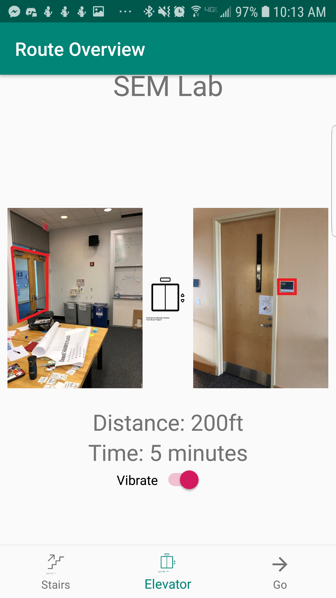

Design Refinement Phase Report
Our design is a picture based indoor navigation app that combines haptic feedback with visual instructions. The design provides a steady haptic heartbeat to reinforce instructions on a screen. This design allows users to find their way indoors using a variety of signals. Its combination of visual and haptic feedback allows the phone to provide the needed level of instruction.
Users navigating through new and complex spaces can intently watch the phone screen for precise instructions. People navigating through a simple or somewhat familiar space can slip the phone into their pocket and use the haptic feedback to reinforce their own intuition. This is a flexible system that allows the app to provide as much or as little help as needed.
Users interact with our app by first inputting a desired destination, where they can choose from popular or recently visited locations or enter their own destination. They’re then taken to a route overview screen where their current location and final destination are pictured, along with whether stairs or elevators will be used in reaching their destination; on this screen, users can choose whether to use elevators or stairs, and can also toggle the navigation’s haptic feedback on and off. Once they hit go, users are then shown a series of images superimposed with arrows showing how to proceed through the pictured spaces. During navigation, the user’s phone vibrates softly in a heartbeat pattern when users are on the right track, and more harshly when they’ve taken a wrong turn, which can aid in navigation when users aren’t actively watching their screen.
What changed?
A few things changed between this phase and the last one. The main improvement revolved around the display type. In the last phase, we tested several different types of ways to display the directions. These included an AR arrow overlay, a vectorized picture walkthrough and an actual picture walk-through. In the last phase, we found that both the AR arrow and vectorized picture were less useful than the picture. We kept this in mind when making design decisions throughout the phase.
We also changed some minor details after the cognitive walkthrough. During the walkthrough we realized we did not allow the users to scroll ahead in the instructions to preview their route. We also realized that we had to alter some of the picture layouts because we had a picture of the destination in a screen before the user input the destination. This screen was later changed to a view of the building the user is in. We also added a vibrate on vibrate off toggle after the cognitive walkthrough. We realized not all users will want their phone buzzing at them all the time so we gave them an option to turn it off.
During the creation of the prototype, we decided that the AR view was a little excessive and didn’t add all that much functionality. Doing away with this also removed the semi-transparent overlay we had been discussing as an options screen, making the entire project a bit more minimalist and straightforward. Also, we ended up going with photos as the only option; this might still change in the future. It was during this phase also that we added an elevator route to specifically avoid stairs, which we had not previously had. We also didn’t get into route preview things due to the time constraints coming with learning Android Studio and making an app; this is something that was mentioned during feedback. Haptic feedback also became more thoroughly defined, though we may need to rethink this all around based on our heuristic evaluation feedback. We also did not put a significant amount of time into visual design, which we intend to improve going forward.
On the haptic feedback, we need to either present a compelling case to include the haptic feedback--such as specifically framing it as a pocket mode with a distinct on-boarding process to explain the use--or entirely remove it. The ‘heartbeat pulse’ we wanted was not conveyed as well as we hoped, which may have come out earlier with more interviews and discussions. However, there is still the chance for a ‘no look’ interface that is interesting, so we may leave it as something that can be disabled, but exists.
There were also elements that were unclear to non-Android users, such as a lack of a back button. This was unavoidable in some ways; Android apps are specifically not supposed to have these, but would have been more clear if we had explained to iOS users. We also intend to include some common iconography going forward, such as an edit button on the destination or a change in the appearance if focused on to make it clear it can be changed.
It seems as though the route could use some work. This might be having a Google Maps-esque list view, a smaller picture of the next step, or being able to swipe through the route ahead of time. Also, the pictures might be better as vectorized images, with rerouting working. Finally, the text displayed in many areas--route overview and navigation in particular--needs work for readability.
Key insights
One of our largest takeaways from this phase was that prototyping effectively can be quite difficult, as there are always tradeoffs with each possible approach. We wanted to prototype our haptic feedback system, which we feel is central to our app’s unique identity, but we were unable to find a prototyping tool that had this functionality. We were thus faced with the difficult choice of either using a simpler prototyping tool and dropping the functionality, or writing our own app to have haptic feedback be possible. In the end, we settled on writing our own app, despite the increased workload (thanks Kaitlyn).
Onboarding is important, especially when known feedback systems are used in novel ways. Users typically aren’t used to their phone buzzing at them during normal, correct operation, so the feedback our app gives tends to be confusing and disorienting if it hasn’t been explained.
Shortcomings
One of our bigger concerns is about the haptic feedback portion of our app. It feels really central to the app’s identity--possibly the biggest difference between us and many other navigation apps--but it is more disruptive than valuable to the majority of our testers. However, we must also balance that with the difficulty we’ve had testing our app. The haptic feedback was partly intended for people who are navigating spaces where they don’t want their phone out, or for people who are blind or visually impaired, and we haven’t been able to test either of those effectively. Additionally, we currently do not have a standalone way of introducing our users to the meaning of the haptic feedback in our app, and we aren’t sure if our team is prepared to make an effective onboarding process.
Additionally, we recognize the disadvantages that come with prototyping a full app on a short timescale. We are considering coupling our app with a more lightweight prototype (by using one of the available prototyping tools) to be able to better convey some of the aspects of our project that are very hard to implement.
Effort Distribution
Our efforts this phase were less equally distributed than they had been, partly because Kaitlyn wrote an entire mock-up app alone. Kaitlyn and MJ tested with other teams. Coleman and MJ worked on wireframes. Kaitlyn and Coleman synthesized heuristic evaluation feedback. Louise organized report-writing and migrated content to the website. Everyone came up with sketches of the screens (before the wireframes), participated in design decisions, and wrote parts of the report.